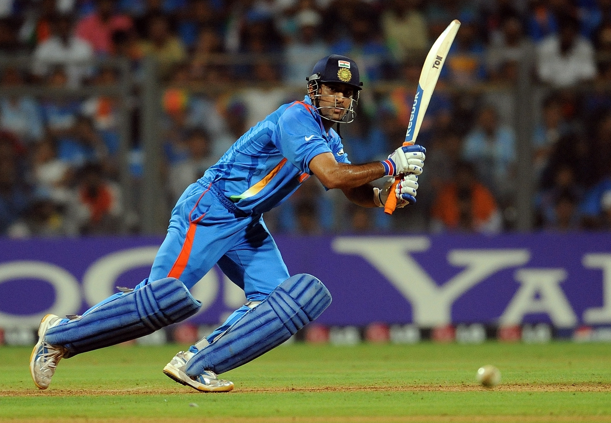

Mahendra Singh Dhoni (born 7 July 1981) is an Indian professional cricketer. He was captain of the Indian national team in limited-overs formats from 2007 to 2017 and in Test cricket from 2008 to 2014. He is widely considered one of the greatest captains, wicket-keeper-batsman and finishers in the history of cricket. He plays as a right-handed wicket-keeper-batsman and is known for his calm captaincy and his ability to finish matches in tight situations. He is also the current captain of Chennai Super Kings in the Indian Premier League.
Dhoni made his international debut in 2004. His talent with the bat came to the fore in an innings of 148 runs against Pakistan in his fifth international match. Within a year he joined the India Test team, where he quickly established himself with a century (100 or more runs in a single innings) against Pakistan. Despite his inexperience, Dhoni took over the captaincy of the one-day side in 2007 and led India to the Twenty20 (T20) world title. Series wins over Australia and Sri Lanka, among others, moved India to the top of the International Cricket Council (ICC) Test rankings for the first time in December 2009. Dhoni was honoured for his play with the ICC One Day International Player of the Year Award in 2008 and 2009. In the 2011 one-day World Cup, Dhoni’s dashing innings of 91 not out—in front of a home crowd in Mumbai—paved the way for India’s victory over Sri Lanka in the final. He also led India to an appearance in the semifinals of the 2015 Cricket World Cup. Dhoni stopped serving as India’s captain in 2017, having led his country in 331 international matches, the most for a captain in the sport’s history. Three years later he retired from international competition.
Earlier Life and Background
 Dhoni was born in Ranchi, Bihar (now in Jharkhand) and hails from a Hindu Rajput family to parents from Uttarakhand.He is the youngest of three children of Pan Singh and Devaki Devi.His paternal village Lwali, is in Jainti Tehsil, Lamgara block of the Almora District of Uttarakhand.His parents moved from Uttarakhand to Ranchi, Jharkhand where his father worked as a pump operator in junior management position in MECON Colony situated in Doranda area in Ranchi.Previously Dhoni was the goalkeeper for his DAV Jawahar Vidya Mandir school's football team,but after seeing his goalkeeping skills, coach Keshav Ranjan Banerjee, one who inspired Dhoni to be a cricketer, picked him to play cricket for his school team.His exceptional wicketkeeping skills allowed him to become the regular wicketkeeper at the Commando Cricket Club (1995–1998). Based on his performance at club cricket, he was picked for the 1997/98 season Vinoo Mankad Trophy Under-16 Championship, where he performed well.
From 2001 to 2003, Dhoni worked as a Travelling Ticket Examiner (TTE) at Kharagpur railway station under South Eastern Railway in Midnapore (W), a district in West Bengal.